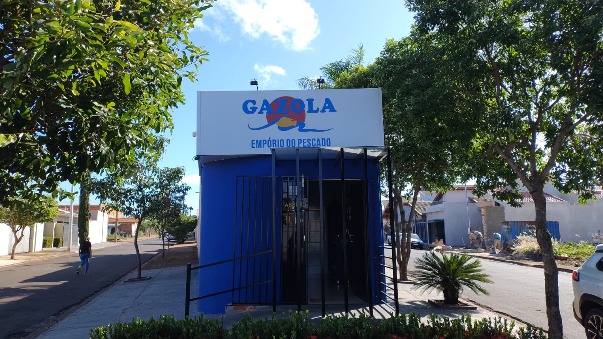
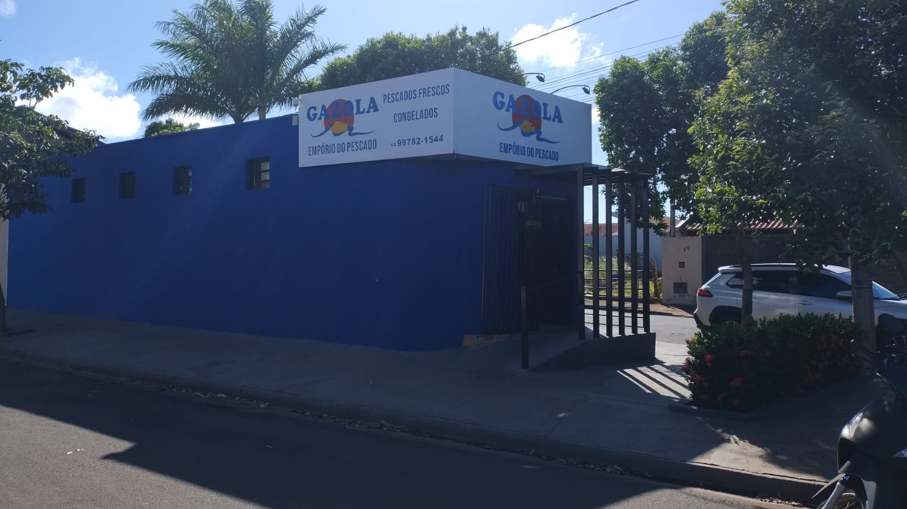
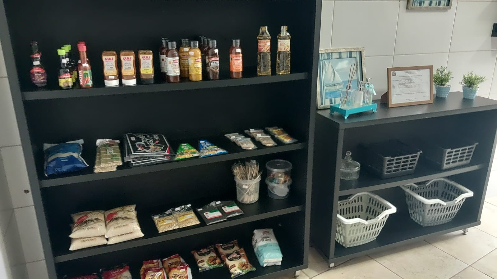
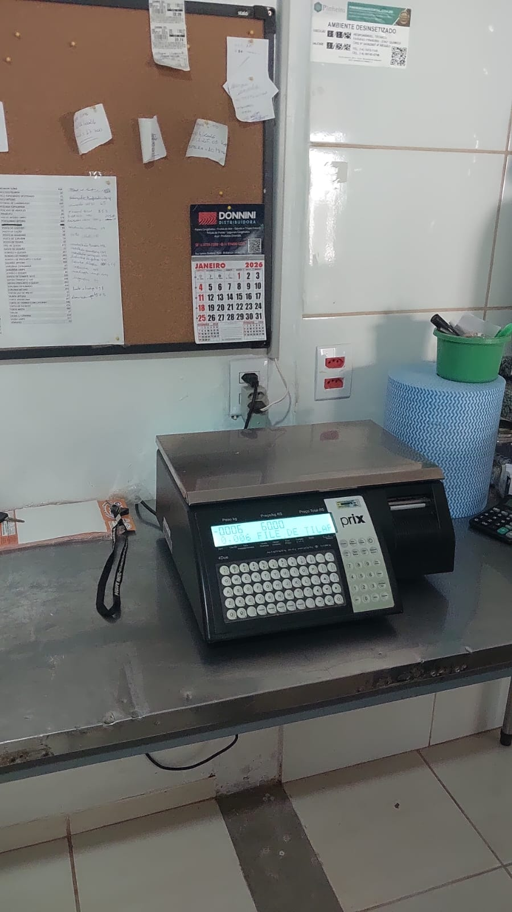

Santa Cruz do Rio Pardo - SP
Especializada em pescados frescos e congelados, oferecendo qualidade, variedade e atendimento diferenciado para seus clientes.
Endereço: Rua Joaquim Dias Machado, nº 110
Falar no WhatsApp Ligar

